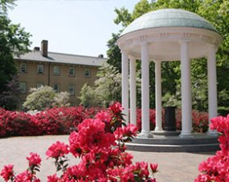

Home
|
The Conference on Statistical Learning and Data Science
is to be held on the University of North Carolina campus at Chapel Hill, from
June 6 to 8 in 2016.
The main goal of the conference is
to bring together researchers in statistical machine
learning and data mining from academia, industry, and government in a
relaxed and stimulating
atmosphere to focus on the development of statistical learning theory,
methods and applications.
Topics include, but are not limited to, big data analytics, classification, computational
biology, covariance estimation, graphical models, high dimensional data,
learning theory, model selection, network analysis, precision medicine, and signal and image
processing.
The conference is sponsored by ASA's Section on Statistical Learning and
Data Mining, INFORMS' Section on Data Mining, INFORMS' Section on Artificial Intelligence, National Science Foundation (NSF), SAMSI, SAS Institute, Google, Rstudio, UCB Biosciences Inc., Department of Statistics & Operations Research, and Department of Biostatistics at UNC Chapel Hill.
If you have any questions about the conference, contact the Program Chair, Yufeng Liu, at yfliu@email.unc.edu.
|